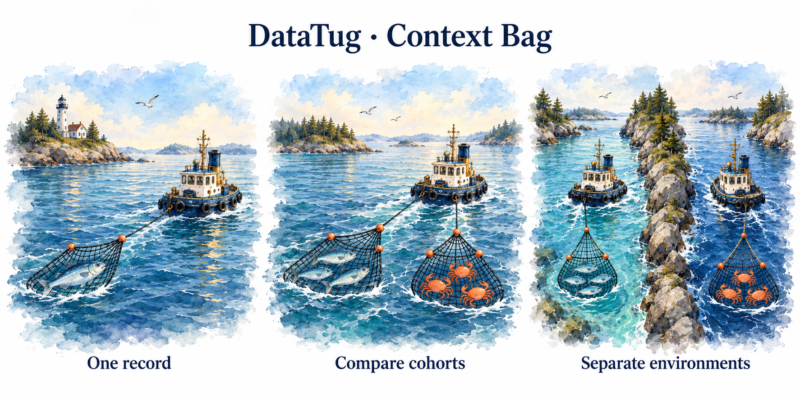

Carry the question.
Keep the evidence.
Enter an order once. Follow it through tables, queries and dashboards. Compare named contexts—without mixing UAT with PROD or rewriting yesterday’s answer.
Standalone synthetic prototype. No backend, AI calls or persistent storage. Product implementation has not started.
One investigation. Several bags.
The work you return to
Conversation, open views, history and evidence. Start, stop, resume, archive or delete. Separate from closing a Detective Case.
A named set of inputs
Start with one default bag. Add Good orders, Bad orders, UAT affected or PROD healthy when useful. Each bag belongs to an environment.
What an answer actually used
Apply pins a context manifest. Send pins attachments. Query and dashboard receipts retain their original inputs after later edits.
The first useful journey
Order 123
Orders / details
Grid + charts
Pinned answer
Keep the trail
Order overview uses existing board parameter contracts. Recommended charts: value by product category and quantity by product. The prototype also includes a progression illustration backed by synthetic events.
Clear context → Confirm clear. Two clicks clear the selected bag. Other bags, sent chat, saved evidence and historical dashboard runs remain intact.
Visible context, room for the work
Recommendation: horizontal session tabs at the top of the context workspace, then a compact applied-context summary with an expandable bag drawer. Keep explicit New session and All sessions controls. Closing a tab preserves its saved draft, history and results; All sessions reopens it. When the last tab closes, show a session chooser rather than silently starting a session. Preserve the refreshed Query Author’s Parameters / Sources / Related sidebar, editor/results layout and mobile navigation.
The selected direction is the hybrid context layout with top session tabs. Top-only context was rejected because large cohorts consume result space. Left and right context panels remain historical alternatives and are not active choices in the prototype.
Ionic component direction
The prototype uses plain HTML to keep this design review self-contained. In the actual app, prefer standard Ionic components and AG Grid, consistent with the existing app direction.
| Surface | Ionic pattern | Interaction |
|---|---|---|
| Context Bag and session card headers | ion-item with a readable label and suitable leading icon | Keep the header non-clickable when it contains separate actions; place buttons in the end slot so each action has its own accessible name. |
| Entry and saved-session lists | ion-list with ion-item rows | Use a row button only when the row itself selects or opens an item. Put close/reopen actions in distinct controls. |
| Input labels and values | ion-item with ion-label and Ionic input/select controls | Keep labels visible and associate controls directly; explain pending versus applied state beside the relevant action. |
| Explorer data | AG Grid in the actual app | Keep sorting, filtering and row navigation in the established grid surface. |
PrimeNG is not part of this direction; consider it only if a concrete app requirement cannot be met by Ionic and AG Grid.
Different surfaces, explicit promises
Explorer
Follows applied context through verified relationships. Pending selection changes do nothing until Apply. No guessed joins.
Queries & dashboards
Declare ordinary inputs. Context supplies candidates. Explicit Run/Refresh; one pinned dashboard manifest, individual widget receipts.
Chat
Attach references explicitly. Large sets stay outside the prompt. Prior answers never silently change when bags change.
OVDB is the database boundary
Private inGitDB engine (default hypothesis) / SQLite engine (alternative)
Optional SQLite remote-cache proxy and browser working cache are separate roles.
| Option | Why consider it | What must be proven |
|---|---|---|
| OVDB + inGitDB | User-owned reviewable records and commit provenance | Crash recovery, conditional writes, query/index cost, retention |
| OVDB + SQLite | Transactions and efficient indexes | Portable revisions, export and shared domain conformance |
| SQLite → remote OVDB | Fast cached reads and local offline access | Authority/watermarks; writing back introduces conflict policy |
Useful early, collaboration later
One order, complete journey
Durable sessions and bags, environment gates, Apply/Clear, related exploration, parameterized dashboard, pinned chat. Local and hosted profiles.
Investigative power
Large reference-backed sets, bag comparison, extraction review, annotations, snapshot branches, offline polish and indexed history.
Deliberate sharing
Publish selected context, manual refresh with diffs, propose changes. Live collaboration and automatic sync wait for evidence of need.
A marine story for launch

Illustration concept, not a product screenshot. Concepts retained; painted treatment references existing datatug.app artwork. Further art work deferred toward launch.
A dedicated launch subagent will add the Context Bag feature page, homepage/navigation entry and query/Detective/dashboard cross-links. Copy and demo links must reflect delivered capabilities.
What remains to choose
Recommend now
- Hybrid context strip + drawer.
- Explicit dashboard Run/Refresh.
- Snapshot branches before linked/live bags.
- First useful slice across local and hosted storage.
Prove before committing
- inGitDB versus SQLite engine evidence.
- OVDB conditional transaction boundary.
- Offline draft/import policy.
- Layout usability with actual investigators.
Multiple bags and environment gating are already approved. Overall implementation remains pending your review of this integrated proposal.